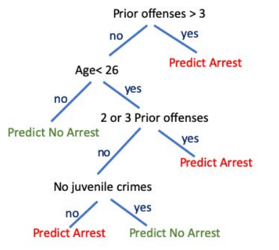
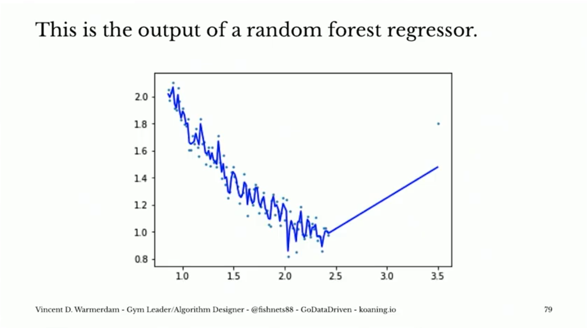

Recommendations for Responsible Machine Learning¶
Having just spent two days discussing issues of bias and discrimination in supervised machine learning models, it’s easy to feel discouraged. But the risk of bias in data science is something that can be managed – indeed, many of the accounts of bias we’ve covered were clearly just the result of no one thinking to check whether a given model worked for people of different racial backgrounds. But in the interest of being constructive, here are a set of concrete, actionable recommendations I think can be helpful in minimizing the risk of developing (and deploying) discriminatory models.
Note that these recommendations are not the be-all-and-end-all of responsible machine learning, or even uncontested. ML bias is such a new area of study that people are still coming to grips with best practices. However, these are some of the things that I have come to feel are critical, and which I will list in approximate order of importance.
1. Choose Your Training Data Carefully¶
Choosing your training data carefully is without a doubt the most important thing you can do when trying to develop an ethical model. That’s because, as we’ve discussed in previous classes, the goal of every supervised machine learning tool is to emulate the behavior of the entity that labeled the training data you use. That means that if your training data was generated by a biased or discriminatory social process, your model will attempt to replicate that bias.
(Note in this reading, I’ll use the term “bias” to mean bias in the social sense of being discriminatory or systematically inaccurate for a specific population, not in the statistical sense, though obviously these are often related).
As a result, the best place to try and minimize the risk of bias is with choosing your training data thoughtfully, because if you start with biased training data, then anything you try and down downstream to reduce bias will leave you fighting your own tools. But pick good data, and your model will work with you, not against you.
(Note we’ve really only talked about the idea of training data bias in this class – if you want to read more about all the flavors of training data bias, I recommend this excellent paper. h/t: Michael Akande).
2. Only Use Opaque Models When You Have To¶
In my view, one of the best ways to avoid unforeseen problems with supervised machine learning is to use interpretable models whenever possible. I make this recommendation not because interpretable models can’t be discriminatory or unethical – just like opaque models, given biased training data, an interpretable model will try to recapitulate that bias in its predictions – but rather because I think they make it much easier for you, the data scientist, to fully understand and evaluate the decision making process underlying your model and see potential problems.
Before diving into all the advantages of intepretable models, however, it’s important to address the elephant in the room: most data scientists assume a trade-off between model simplicity and accuracy. Linear regression or decision trees are nice, one may say, but they can’t compete with neural networks for predictive power. However, I will posit that in the vast majority of cases, fancy opaque tools (e.g. neural networks) actually won’t perform substantially better than more interpretable models in many real world application.
Many people’s first response to this claim will be “What?! No way. I hear every day about how fancy models are being used to crack formally unsolvable problems”, or “but the models that win at Kaggle are always crazy complex!” And that’s true…. to a point. But…
First, news articles aren’t reporting about a representative sample of what real data scientists run into on a day to day basis. The reason you read about fancy models solving new problems is precisely because they are exceptional. If you are working on one of those problems – self-driving cars, or protein folding – then by all means you will probably need the most cutting edge tools available. (Computer vision is one area where neural networks are almost always necessary). But for most of us, most of the time, I think you will find interpretable models will generally perform just as well as opaque ones. (Indeed, here’s an article about the experience of folks in some data science competitions using interpretable models, and a great talk on the real-world experience of a data science consultant discussing these issues.
And second, it’s important to remember that the models that win Kaggle problems aren’t necessarily the best model to use in the real world! Part of that is because, like the stories you hear in the news, Kaggle problems are a representative sample of the problems you’ll face in your career. But the bigger reason is that in a Kaggle competition, the only goal of your model is to maximize a few evaluation statistics, and that’s not how the real world works.
In the real world, there are LOTS of additional considerations you need to bear in mind. Maintainability, for example: if you build a good model that your company wants to use for a while, then chances are the time will come when you and your model go off in different directions, and somebody will have to take over maintenance of the model. If you have developed something that is so crazy complex and weird that your company has to hire somebody with the same education level you have to even begin to understand the model, that’s not good. Simplicity means maintainability.
Interpretability also comes with certain guarantees around model behavior (see functional form constraints discussion below). With opaque, highly-non-linear models, it can be very hard (in some cases effectively impossible) to know if the model will spit out nonsense or dangerous predictions when faced with certain inputs that you didn’t explicitly test. Given that, in important domains (e.g. finance, healthcare, etc.) opaque models may contain virtual time-bombs just waiting to be triggered by the right inputs.
Relatedly, companies using models in the real world have to worry about manipulation and adversarial users, and it can be extremely difficult to predict how a model many be manipulated if you don’t even know how it works yourself. For example, many school systems have adopted the use of an “auto-grader” (almost certainly a neural net) for high school essays to free up teachers to spend less time grading and more time teaching. The problem, however, is that what the world has discovered is that the model is deeply manipulatable. In particular, what it appears to have found is that essays in the training data that received good grades from human graders were the essays with lots of big words. So… turns out the model was mostly just looking for big words, and once this was realized, students discovered they could get good grades by just submitting lists of big words. (This also make them quite discriminatory, as discussed in the article). And similarly, some of the best computer vision systems around are also incredibly easy to fool.
As a result, those types of models may score well on Kaggle, but believe me when I say your managers would be mad if your financial analysis model turned out to be so easy to game.
And if what you’re interested in is ethical data science, than a really interpretable model (like a decision tree) is also something that non-data scientists can evaluate and engage with in a way that just isn’t possible with complex models. For example, consider the decision tree created by Hu et. al. to replace the opaque, proprietary (and extremely biased) algorithm being used in the US court systems to advise judges on whether to grant bail or not:
This model is so simple that you can share it with anyone, making it possible for people to engage in thoughtful discussions about things like: is it ethical to include a person’s juvenile arrest record in adult risk assessment? (In the US, juvenile records are generally sealed in the belief that decisions made in childhood shouldn’t determine someones fate in life. But here they’re being considered once more. Is that ethical?). And that type of engagement with non-data scientists can really only happen with transparent models.
Don’t get me wrong – there are applications where you need opaque models (e.g. most things in computer vision, or advanced NLP modeling). And there’s more and more great work on trying to find ways to introspect these complicated models. But why don’t you try something simple first? Because if it works, it can save you LOTS of headaches.
3. Use Models with Functional Form Constraints¶
As noted above, one of the dangers of algorithms in high-stakes settings is that with opaque models, there are limits to your ability to predict the behavior of the algorithm in all settings. Give the model inputs that are very similar to your training data and you’ll probably be fine, but give it unusual inputs and… all bets are off.
In general, this is one of the advantages of interpretable models (especially linear models): you can easily (analytically) understand how they will behave.
Thankfully, there are also non-parametric models that can give some guarantees of behavior, like monotonicity. For example, suppose you’re modeling cardiac risk as a function of cholesterol, or credit worthiness as a function of income. You may wish to ensure that your model never does something weird, like predict lower cardiac risk for people as LDL cholesterdol levels rise, or lower credit worthiness as income rises.
(Note that in addition to thinking of this as a method of protecting your company / patients, you can also just think of this as a kind of regularization constraint to prevent over-fitting!).
To illustrate, here’s a comparison of the behavior of a random forest and an isotonic regression model. (This example comes from a great talk by Vincent Warmerdam you can find here, and which is assigned for the next class).

If this were, say, health on the y-axis and smoking on the x-axis, it seems very clear that the isotonic regressor is going a better job! And the best part is, that regressor is already in sklearn here: Isotonic Regression!
Moreover, functional form constraints are available even for some opaque models like XGBoost.
4. Compare Predictions for Sub-Populations¶
Finally, before your model goes out, evaluate the types of predictions it generates for different subpopulations you might be concerned about given where your model is being deployed (men v. women, Black v. White, dalit v. brahmin, christian v. muslim, etc.).
In evaluating predictions by sub-population, note that there are a couple ways to comparing outcomes:
1. Compare actual outcomes to predicted outcomes: This is a simple way of evaluating whether your model errors disproportionately impact one population (high error rate) or have a bias (errors tend to gone in one direction) before you deploy a model. Note that you probably want to plot these distributions (don’t just look at average errors!) since you may be especially interested in tail risk that might get missed by averages.
2. Compare outcomes with common co-variates: Another useful test if your sub-populations are explicitly entering your model but their impact isn’t easily interpretable (i.e. you don’t just have a race indicator variable in a linear model) is to (a) draw observations from your data, and (b) feed them through your model both with their original sub-population (e.g. race) value, and with that sub-population swapped. Look at the distribution of differences.
3. Compare predicted outcomes for different sub-populations: If you have sub-population identifiers in your data – even if they aren’t in the model – compare predictions for people from different sub-populations. Just because you don’t include, say, gender in a model does not mean that a model will not be able to impute someone’s gender from other correlated factors, so you should always compare outcomes of your model.
Of these tests, the first is one where “what you want” is obvious: you want similar performance for all sub-populations!
But the second and third tests are more difficult to inteprete, because it will not always be the case that “unbiased” means “gives the same predictions regardless of race/gender/religion.”
Suppose, for example, you’re interested in understanding the likelihood that a patient has sickle cell anemia based only on very basic data about their symptoms. Sickle cell anemia is must more common in people of African descent, and for a known reason: having an allele for sickle cell provides protection against malaria, so there is a selective pressure for people in regions with endemic malaria to be more likely to carry the gene for sickle cell. Race, in other words, is (a) known be a strong predictor of sickle cell anemia, and (b) for reasons we understand well. Given that, if the model gave the same prediction for the likelihood of sickle cell for White and Black patients, that would actually be a sign of bias in the algorithm, not an indicator it is unbiased.
At the same time, however, there are situations where differential predictions in medical algorithms likely are a sign of bias. It was recently realized that an algorithm that estimated a patients need for a kidney transplant included a correction for race that resulted in Black patients with the same blood tests and other medical indications being flagged as being lower priorities for kidney transplants. Unlikely in the sickle cell example, however, here there is no clear scientific basis for this adjustment. Indeed, one possible explanation is that Black patients have historically not been given the same access to the best healthcare resources, and so historic data on kidney transplants may show transplants are less likely to succeed in Black patients not because of some biological factor, but rather because of past discrimination. As a result, many have called for removing the adjustment from models unless / until a rigorous explanation can be found.
In addition, it’s also worth emphasizing that in both the cases above, the clear best solution to apparent bias in these algorithms would be to find better measures of the factors for which race is proxying. Using a patients race as a signal of the likelihood the patient has sickle cell is statistically reasonable, but obviously it’s a very crude proxy. As a result, it might be a reasonable factor in a model that is used for initial patient screening, but obviously as soon as any more rigorous medical test data is available (e.g. blood work), one would probably want to drop race from the model.
Similarly, if there is a biological factor shaping the success of kidney transplants in Black patients (like a specific gene that’s marginally more likely in Black patients), then clearly it would be better to have a test for that gene that goes into the model than to include race.
(Side note: race is a social construct that is only very weakly correlated to genetic differences! Assuming self-identified race is a good proxy for nearly anything biological is a very, very dangerous assumption to make, and should only ever be done on the basis of really good scientific evidence.)
All of which is to say that you always want to run the second and third tests described above so you know what your model is doing. But the results of those tests are something you will have to interprete careful based on how the model is being used, and the substantive dynamics in play. In most cases, you’ll want to bring those differences to someone who has greater substantive knowledge so they can offer their thoughts – they’re likely to be better positioned to interpret those differences, but wouldn’t have been able to find them in the first place without your help!
5. “No” is Always An Option¶
And one final and important reminder: you are never being hired as a data scientist to build a model; you are being hired because you are an expert in quantitative methods, and your stakeholder wants you to use that expertise to help them. And sometimes that means that your job to tell your stakeholder that what they want to do can’t be done with the data that’s available.
Even if you’ve done everything right, you may still find yourself in a situation were you just can’t develop a model that won’t be so biased or discriminatory that it shouldn’t be used. In general, you will end up in the situation when the only training data available is just too biased to be useful. When you end up in that situation, the best thing that you can do for your stakeholder is to communicate that reality so they don’t end up in a situation where they’re deploying a model that’s so discriminatory that they get terrible press / get sued.
To be clear, just because there’s bias in your model doesn’t mean that it’s unusable. Unfortunately in life, it’s often impossible to get all the way to zero bias. Instead, when thinking about whether your model makes sense to use, after you’ve done everything you can to minimize the bias, I think the best question to ask is: “is this less biased than the alternative?” Because a solution that, while imperfect, dramatically reduces bias is probably better than leaving a very biased system in place (e.g. many systems based on human evaluation) so long as it’s part of a campaign of constant improvement towards zero bias.
But if you can’t clear that hurdle? Then it’s not just acceptable, but generally in the interest of your stakeholder to communicate that fact, and advise them on how to get better training data, rather than charge ahead into a lawsuit and PR disaster.
Tools for Interpretable / Constrained Machine Learning¶
OK, so now that you’ve read those, what concrete tools should you be turning to for help?
Interpretable Models¶
First, the obvious one: linear regression! You can do a lot more with linear models than you may think. If you’ve found this site and are not a student in my class (and thus not following assigned readings), watch this video.
Optimal Sparse Decision Trees (code): tools for generating scalable and optimal interpretable decision trees.
Optimal Falling Lists (code): Create decision trees that reach decisions as quickly as possible. Interpretable and good for efficient triage.
Tools for Neural Networks¶
Neural networks are notorious
Hybrid Models: Need to use a neural network? Consider using the neural network only for the portion of the problem that really needs to have an opaque model. Hybrid models – where most of a modelling framework is transparent and parametric, but small portions or modelled with more flexible machinery – are very much the forefront of a lot of machine learning research (e.g. Scientific ML, and many of the recent innovations in self-driving cars).
Constrained Models¶
Tools for Introspection¶
Better Decision Tree Visualizations from dtreeviz Better visualizations of decision trees from sklearn and XGBoost.